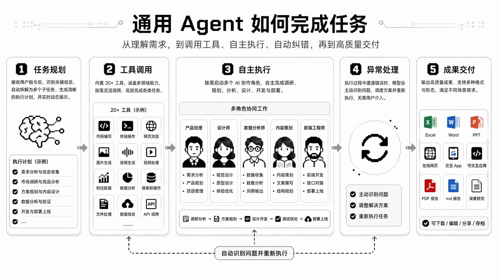

用 Kimi 踩过的五个坑——别等 credits 烧光才反应过来
Kimi 看起来就是一个聊天框，点开就能用，但我第一次上手时在 credits 消耗、模型选择、网页端功能边界上来回翻车。这篇把我踩过的坑逐个拆开，每个都有症状、原因和解法。
看着简单，其实有几个坑
我第一次打开 Kimi 的官网的时候以为就是个普通 AI 聊天框——登录、输入问题、得到答案，就这么回事。结果三天后我的 credits 就烧光了，Agent 任务跑不动了，还以为是账号出了问题。后来才发现我在模型选择、思考强度、Swarm 调度这几个地方上反复踩坑，每一次都实打实消耗 credits。
这篇把我踩过的坑逐个讲清楚，每个都给了提前避开的解法。看完这篇，你至少不会像我那样白烧几百 credits。
坑一：不知道 credits 怎么没的，以为会员额度是无限的
症状
第一天登录，随手发了几个问题，然后点了几次 Agent 模式，第二天打开发现 K3 模型用不了了，提示 credits 已耗尽。我当时以为是程序 bug，反复刷新都没用。
原因
Kimi 的 credits 不是"免费随便用"的聊天额度，而是高级 AI 能力的计量货币。K2.6 的简单聊天不消耗 credits——但我当时没分清模型，随手切到 K3 又开了 High 思考强度，每次对话都在烧。Agent 模式、Swarm、OK Computer 这些功能消耗更快，跑一个中等复杂度的 PPT 任务可能就要 30 到 50 credits，深度研究报告直接上百。
更糟的是 K3 Swarm 模式，并行 10 个子 Agent，看起来是"一次搞定"，但每个子 Agent 的 token 都累计消耗，credits 是单 Agent 的 2 到 3 倍。我那天不小心让一个 Swarm 任务跑了两遍，直接烧了将近 200 credits，等于当天额度的三分之一。
解法
不确定具体怎么算的可以先去kimichat文档翻一下，把 credits 的消耗逻辑搞清楚再开 Agent。简单任务老老实实回 K2.6，需要 K3 的任务先用 Low 档——K3 Low 比 High 省 50 到 70%，大部分场景够用。同一个任务别让 Agent 反复重来，每次重来都是重新消耗，正确做法是说"上一版的第 3 页不对，改一下就好，其他保留"。
定期看一下 credits 余额，养成每周查一次的习惯。快用完了就换回 K2.6 做简单问答，或者调整思考强度。别像我那样等耗尽了才反应过来。

坑二：模型切换的认知偏差——K2.6 不是万能的，Swarm 也不是越快越好
症状
用 K2.6 让它"帮我做一个公司官网"，得到的只有一段纯文本描述，没有完整的网站交付。然后切到 K3 Swarm 去"翻译一段 500 字的文字"，等了将近一分钟，消耗了 60 credits，而 K2.6 同样的翻译只用了三秒。
原因
K2.6 定位是快速对话和问答，聊天模式免费、响应快，但它做不了 Agent 端到端交付。复杂多模态任务（写 Excel 公式、从设计稿截图生成前端代码）K2.6 只能输出纯文本，解析不了图片和表格。
Swarm 的加速只在有大量可并行子任务时才成立。"搜 20 家公司的官网"、"处理 10 个独立 Excel"这类任务能快 3 到 5 倍，但"先写代码再测试再修 bug"这种强依赖串行的任务，Swarm 和单 Agent 速度差不多——甚至因为子 Agent 启动开销，简单任务反而更慢。
解法
先看任务里有没有"大量"、"全部"、"上千条"这类关键词。没有的话先用 K3 单 Agent 试试，嫌慢再换 Swarm。简单问答、翻译、代码片段生成，直接 K2.6 搞定，别浪费 credits 开 K3。
坑三：网页端的天花板——以为不需要装桌面端
症状
在网页端用 Kimi 做了一个需要访问本地文件夹的任务，反复失败。以为是 prompt 写得不好，改了三次指令还是不行。后来才知道网页端根本不支持本地文件访问。
原因
Kimi 网页端（kimi.com）确实最快上手，零安装、零门槛，但它有几个硬伤。网页端没有本地文件访问能力——Kimi Work 桌面端可以挂载文件夹让 Agent 读写本地文件，网页端做不到。定时任务 Cron 和跨标签页自动化的浏览器扩展也只在桌面端有。OK Computer 虚拟电脑更是桌面端独占。
我当时在网页端做一个"批量整理本地 Downloads 文件夹"的任务，反复改 prompt 都没用，浪费了好几个小时。
解法
快速问答、不需要本地文件的 Agent 任务，网页端足够。但一旦任务涉及本地文件操作、定时触发、浏览器自动化，直接从kimichat下载装 Kimi Work 桌面端，别在网页端死磕。网页端和桌面端的账号是互通的，聊天记录会自动同步。
坑四：Swarm 的加速错觉——不是所有任务都能快 4.5 倍
症状
看到官方说 Swarm 比单 Agent 快 4.5 倍，就把所有任务都换成 Swarm。结果"一步步写代码 + 测试 + 修复"这种任务，Swarm 比单 Agent 还慢了几秒。
原因
那个 4.5 倍加速比是有前提的——任务里必须有足够多的可并行环节。官方测试的场景都是"搜 20 个来源"、"1000 行 Excel 处理"、"竞品矩阵 20 家公司"，这些子任务之间互不依赖，可以同时开跑。
但当任务有强依赖关系时，比如"先分析数据 → 再做图表 → 再写报告"，每一步都要等上一步完成，Swarm 的子 Agent 只能排队。极端情况下，如果一个子 Agent 都用不上，Swarm 启动开销反而让整体更慢。
还有一个隐形的瓶颈：当子 Agent 数量特别多（比如 300 个），主 Agent 的规划和汇总本身成了瓶颈，边际收益递减。
解法
中等任务（10 到 30 分钟）先用 K3 单 Agent 试试，嫌慢再换 Swarm。大型任务（1000 条以上数据、30 个以上来源）直接 Swarm，省下来的时间值回 credits。极端简单的任务（"搜一个词"）别开 Swarm，子 Agent 启动开销都不止几秒。
防坑清单
- 搞清楚 credits 逻辑：K2.6 聊天免费，K3 和 Agent 都消耗 credits，每次升级思考强度都在乘以消耗倍率
- 任务先看复杂度：简单任务 K2.6，中等任务 K3 单 Agent，大型并行任务才上 Swarm
- 本地任务直接装桌面端：网页端没有本地文件访问，别在网页端死磕本地操作
- 同一个会话把任务做完：反复换 Session 或让 Agent 重来，每次都重新消耗大量 credits
- 定期查余额：每周看一次 credits，快用完了及时切换模型或调整思考强度
知道这些坑之后，这软件其实相当省心——只要把 credits 花在刀刃上，模型选对档位，Kimi 真能顶得上一个小团队。对了，整理好的中文资料同步放在了GitHub、Gitee和GitCode三个仓库，国内网络访问有不同体验。